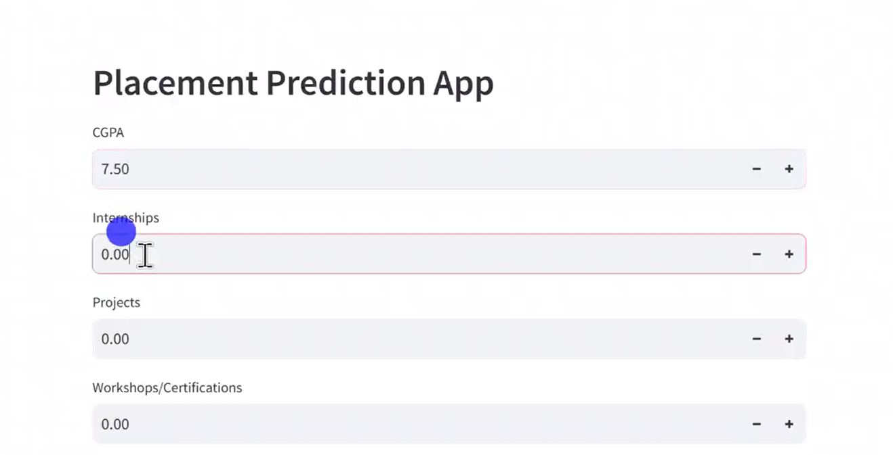
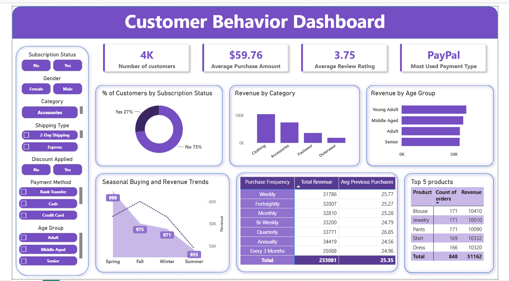
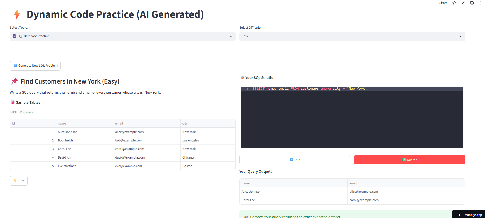

Featured Projects
AI Complaint Classifier and Responder
RESOLVEAI is an AI-powered customer complaint management system built using Streamlit. It intelligently classifies complaints by category and urgency, generates AI-based responses, and provides separate interfaces for customers and administrators to manage and resolve issues effectively.
Integrated Banking Solution
A desktop-based Banking Application built with Python and CustomTkinter, featuring account management, transactions, and customer verification connected to Power BI for real-time analytics and reporting, enabling data-driven decision-making for banking operations.

AI-powered PDF question-answering system
PDF_QnA_RAG is an intelligent question-answering system that allows users to upload a PDF file and interact with its content using Retrieval-Augmented Generation (RAG). It combines document chunking, semantic search, and large language model responses to generate accurate, context-aware answers.
Flipkart Product Data Extraction and Preprocessing
Flipkart Product Data Extraction and Preprocessing is a project that focuses on scraping product information from Flipkart and performing necessary preprocessing steps to make the data suitable for analysis.
Placement Prediction App
Live DemoPlacement Prediction App is a machine learning project that predicts student placement outcomes based on their academic performance and other features.

Customer Shopping Behavior Analysis
An end-to-end data analytics project focused on analyzing consumer purchasing patterns, spending habits, and demographic influences to uncover actionable business insights. By evaluating key retail metrics, this project identifies customer segments, product performance trends, and purchasing triggers to help optimize marketing strategies and boost customer retention.

PySQL Practice App
Live DemoAn AI-powered coding practice platform built with Streamlit that generates unique Python and SQL challenges on demand using the Groq API. The application provides an interactive coding environment where users can solve dynamically generated problems, execute their solutions, receive hints, and instantly validate their answers.
